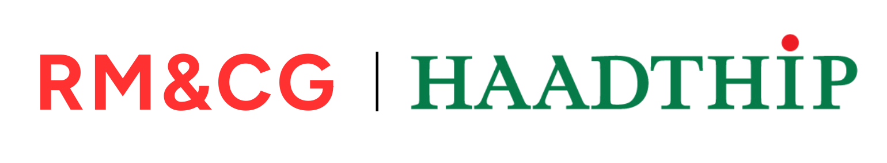

<!DOCTYPE html>
<html lang="th">
<head>
<meta charset="UTF-8">
<meta name="viewport" content="width=device-width, initial-scale=1.0">
<title>Premium Responsive Footer</title>
<style>
  body {
    font-family: 'Segoe UI', Tahoma, Geneva, Verdana, sans-serif;
    margin: 0;
    /* แนะนำให้ใช้ padding: 0; เพื่อให้สีเขียวกระจายเต็มขอบจอ 100% */
    padding: 0; 
    background-color: transparent;
  }

  /* กรอบ Footer หลัก */
  .footer-container {
    background-color: #007947; /* เปลี่ยนเป็นสีเขียวที่คุณต้องการ */
    color: white;
    padding: 30px 40px;
    /* เอา border-radius ออก เพื่อให้กล่องเป็นสี่เหลี่ยมแนบสนิทกับเว็บ */
    border-radius: 0; 
    display: flex;
    flex-wrap: wrap; /* สำคัญ: อนุญาตให้ปัดบรรทัดถ้าย่อจอ */
    justify-content: space-between;
    align-items: center;
    gap: 20px;
    box-shadow: 0 4px 15px rgba(0,0,0,0.1); /* ปรับเงาให้ดูซอฟต์ลงเข้ากับสีทึบ */
  }

  /* ==================================
     ส่วนที่ 1: โลโก้องค์กร (ด้านซ้าย)
     ================================== */
  .footer-brand {
    flex: 1 1 250px; /* อนุญาตให้ขยายและหดได้ */
    display: flex;
    flex-direction: column;
    gap: 10px;
  }
  .brand-logo {
    width: 100%;
    max-width: 270px;
    transition: transform 0.3s ease;
  }
  .brand-logo:hover {
    transform: scale(1.02);
  }
  .brand-desc {
    font-size: 14px;
    font-weight: 500;
    opacity: 0.9;
    margin: 0;
  }

  /* ==================================
     ส่วนที่ 2: ลิงก์เมนู (ตรงกลาง)
     ================================== */
  .footer-links {
    flex: 1 1 150px;
    display: flex;
    flex-direction: column;
    gap: 12px;
    padding-left: 20px;
    border-left: 1px solid rgba(255,255,255,0.2);
  }
  .footer-links a {
    color: white;
    text-decoration: none;
    font-size: 15px;
    font-weight: 600;
    display: inline-block;
    transition: all 0.3s ease;
    position: relative;
    width: fit-content;
  }
  .footer-links a::after {
    content: '';
    position: absolute;
    width: 0;
    height: 2px;
    bottom: -4px;
    left: 0;
    background-color: #a3e4c0;
    transition: width 0.3s ease;
  }
  .footer-links a:hover {
    color: #a3e4c0;
    transform: translateX(8px);
  }
  .footer-links a:hover::after {
    width: 100%;
  }

  /* ==================================
     ส่วนที่ 3: โลโก้รางวัล CAC (ด้านขวา)
     ================================== */
  .footer-awards {
    flex: 1 1 250px;
    display: flex;
    justify-content: flex-end;
    align-items: center;
    flex-wrap: wrap; /* ถ้าย่อจอให้โลโก้เรียงซ้อนกันได้ */
    gap: 15px;
  }
  .award-logo {
    width: 75px;
    max-width: 28%; /* ล็อคไม่ให้ใหญ่เกินไปในจอเล็ก */
    height: auto;
    transition: all 0.4s cubic-bezier(0.175, 0.885, 0.32, 1.275);
    filter: drop-shadow(0 4px 6px rgba(0,0,0,0.15)); /* ปรับเงาให้ซอฟต์ลง */
  }
  .award-logo:hover {
    transform: scale(1.15) translateY(-5px);
    filter: drop-shadow(0 8px 15px rgba(0,0,0,0.3));
  }

  /* ==================================
     การตั้งค่าสำหรับย่อหน้าจอ (Responsive)
     ================================== */
     
  /* สำหรับ iPad หรือ Tablet (จอขนาดกลาง) */
  @media (max-width: 900px) {
    .footer-container {
      padding: 25px 20px;
    }
    .brand-logo { max-width: 220px; }
    .award-logo { width: 65px; }
  }

  /* สำหรับโทรศัพท์มือถือ (จอเล็ก) */
  @media (max-width: 650px) {
    .footer-container {
      flex-direction: column; /* เปลี่ยนเป็นเรียงแนวตั้ง */
      text-align: center;
    }
    .footer-brand {
      align-items: center;
    }
    .footer-links {
      border-left: none;
      border-top: 1px solid rgba(255,255,255,0.2);
      border-bottom: 1px solid rgba(255,255,255,0.2);
      padding: 20px 0;
      width: 100%;
      align-items: center;
    }
    .footer-awards {
      justify-content: center;
      width: 100%;
      margin-top: 10px;
    }
    .award-logo {
      width: 70px;
    }
  }
</style>
</head>
<body>

  <div class="footer-container">
    <div class="footer-brand">
      
      <p class="brand-desc">ฝ่ายบริหารความเสี่ยง และฝ่ายกำกับดูแลกิจการ</p>
    </div>

    <div class="footer-links">
      <a href="https://haadthipo365.sharepoint.com/:u:/s/RMCGConnect/IQDq9P-uksqNQ5N_01FQDxlPAatLLRuEJN63DEhjmU8YtFE?e=bAmGu8" target="_top">หน้าหลัก</a>
      <a href="https://haadthipo365.sharepoint.com/sites/RMCGConnect/_layouts/15/news.aspx?title=%E0%B8%82%E0%B9%88%E0%B8%B2%E0%B8%A7%E0%B8%AA%E0%B8%B2%E0%B8%A3&newsSource=1&instanceId=81c50e1f-3102-4746-8bf1-317e2332d05a&webPartId=8c88f208-6c77-4bdb-86a0-0c47b4316588&serverRelativeUrl=/sites/RMCGConnect/SitePages/OrganizationHome.aspx&pagesListId=4f686553-2f18-41ee-9de1-9169b0bf0eb1" target="_top">ข่าวสาร</a>
      <a href="https://haadthipo365.sharepoint.com/:u:/s/RMCGConnect/IQAPk6QO5DcsSY0fhqUeqzghAQ6J4Oq7UayF3kySNF5mqBA?e=WccFPM" target="_top">ติดต่อเรา</a>
    </div>

    <div class="footer-awards">
      
      
      
    </div>
  </div>

</body>
</html>
